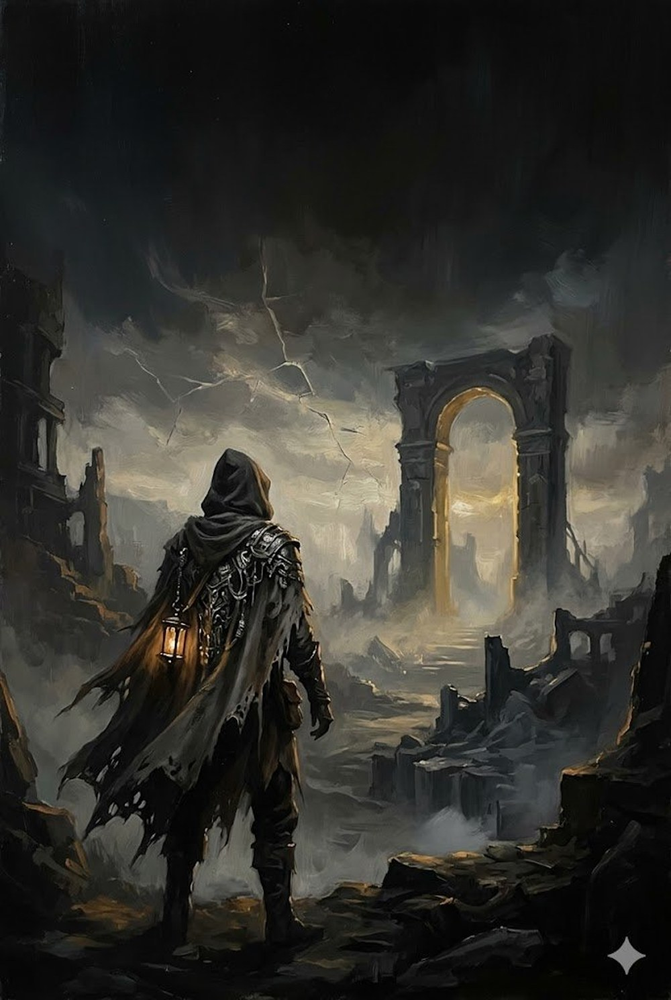
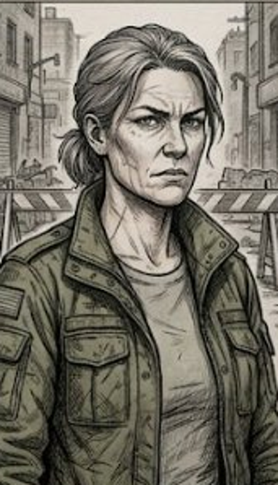
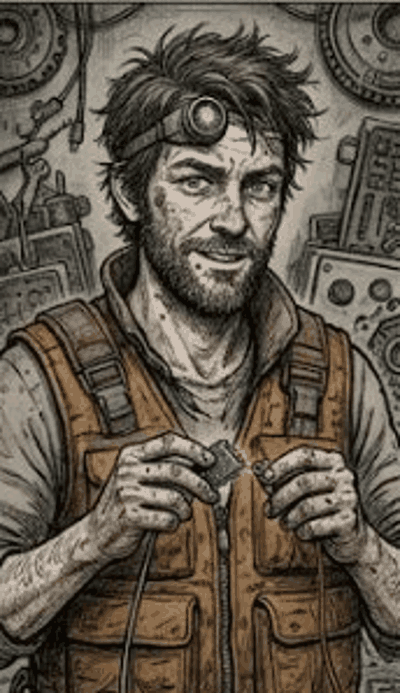
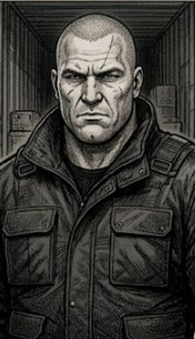
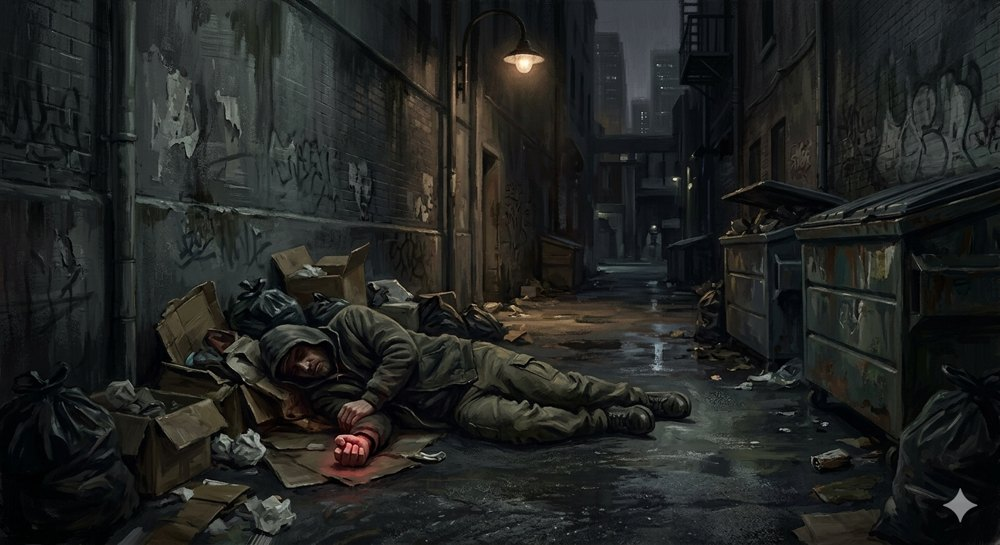
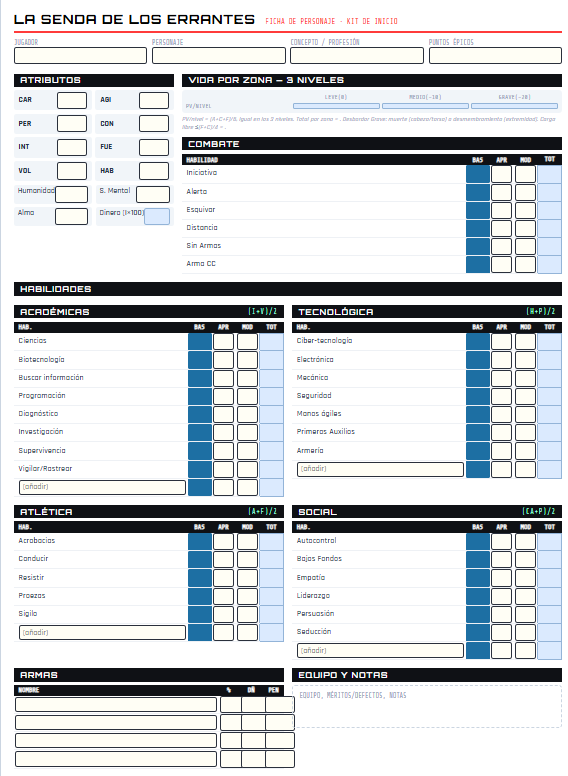

# LA SENDA DE LOS ERRANTES — KIT DE INICIO

Es martes. Llueve flojo y el mundo es exactamente lo que parece: coches, prisas, un café para llevar enfriándose en tu mano. La ciudad podría ser la tuya. Gente normal yendo a sitios normales, convencida —como tú hasta hace cinco minutos— de que esto es todo lo que hay.
Entonces oyes los disparos.
Y ves caer al hombre en el callejón, con un trozo de algo imposible apretado en el puño. Y a los que vienen detrás: demasiado rápidos, demasiado callados, con unos ojos que reflejan mal la luz. Los que no deberían existir, y existen.
Toda tu vida en un solo mundo, creyéndolo el único. Y resulta que era una sola tesela entre incontables. Acabas de tropezar con el borde de la realidad —y al otro lado, algo enorme te devuelve la mirada.
Hay más realidad de la que te contaron.
La que conoces —tu ciudad, tu siglo, tu mundo— es una tesela: una dimensión entre incontables, engarzada con todas las demás en algo más vasto y más antiguo que cualquier civilización que las habite. Y por las junturas se mueven los que conocen el secreto. Corporaciones tan colosales que compran y venden dimensiones enteras. Maestros que abren puertas en el aire. Cosas que ya eran viejas cuando tu especie aún no tenía nombre. Y, de vez en cuando, alguien corriente que tropieza con la verdad y descubre que ya no hay vuelta atrás.
La Senda de los Errantes es un juego de rol para contar esas historias. Un sistema rápido y despiadado, donde una persona es frágil y una mala decisión se paga cara —así que la astucia, la palabra y saber cuándo huir valen tanto como un arma—. Aquí no hay héroes invulnerables: hay gente de carne y hueso tomando decisiones imposibles en un universo que es, a la vez, brutal y de una belleza que corta la respiración.
Puedes jugar la intriga que se cuece a fuego lento o el enfrentamiento que lo incendia todo. La conspiración susurrada o la huida a tumba abierta. Y, si tienes el estómago, reírte por el camino: el cosmos es terrible, pero también absurdo.
Lo que tienes en las manos es una puerta. Una aventura entera, lista para jugar. Cuando la cierres, habrás visto de qué va esto. Solo una esquina —pero bastará para que quieras el resto.
La realidad no es un único universo. Existen miles de mundos, épocas y dimensiones, conectados por una red imposible: El Mosaico. Algunos la exploran. Algunos intentan controlarla. Otros solo intentan sobrevivir a ella.
El Mosaico
●
┌─────────┬────┼────┬─────────┐
│ │ │ │
ERRANTES CORPORACIONES DISTORSIÓN
│
MAESTROS DE PORTALES
Los Errantes. Son quienes han descubierto —o están a punto de descubrir— que la realidad es mucho más grande de lo que parece. Algunos recorren mundos desde hace décadas; otros acaban de cruzar la primera puerta. Pueden ser exploradores, mercenarios, arqueólogos, hechiceros, agentes corporativos o simples supervivientes. Todos comparten una misma certeza: la realidad no termina donde les dijeron. Los primeros en descubrir nuevos horizontes —y los primeros en perderse en ellos.
El Mosaico. Una inmensa red de mundos, ruinas, corredores y realidades conectadas. Nadie conoce su extensión completa. Algunas teselas contienen civilizaciones enteras; otras llevan abandonadas milenios; algunas no deberían existir. Cada puerta puede conducir a una maravilla... o a una pesadilla.
Las Corporaciones. Grandes organizaciones que han descubierto parte de los secretos de El Mosaico. Controlan rutas, recursos, tecnología y mundos enteros. Compiten entre sí en una guerra silenciosa que la mayoría de la gente ni siquiera sabe que existe. Donde otros ven misterios, ellas ven beneficios.
La Distorsión. Una fuerza que altera la realidad. Puede manifestarse como magia, mutación, fenómenos imposibles o alteraciones del espacio y el tiempo. Nadie la comprende por completo. Todos la temen. La realidad no está tan bien construida como parece.
Los Maestros de Portales. Exploradores, científicos y visionarios capaces de abrir caminos entre dimensiones. Son responsables de muchas de las rutas que permiten viajar por El Mosaico. Sin ellos, la expansión entre mundos sería imposible. Cada portal es una apuesta contra lo desconocido.
¿Qué historias se juegan? Exploración de mundos desconocidos · intrigas entre corporaciones · expediciones arqueológicas · ciencia ficción y fantasía mezcladas · horror dimensional · supervivencia · el descubrimiento de secretos imposibles.
Una puerta. Un mundo. Un misterio.
Bienvenido a La Senda de los Errantes.
Versión reducida para playtest. La aventura completa, ampliada y con todo su material, está en el manual. Este kit contiene lo justo para sentarse a jugar: la chuleta de reglas, cinco personajes listos y la crónica resumida.
Esto es una herramienta directa para el Director de Juego. Aquí no hay rodeos teóricos: la ambientación, las reglas machacadas para que la partida no se detenga, y el formato exacto para saber qué leer en voz alta y qué gestionar detrás de la pantalla.
CÓMO LEER ESTE MÓDULO
- El texto en recuadro de cita y en cursiva es para leer en voz alta a los jugadores.
- El texto marcado [DJ] es información reservada para el Director de Juego: no se lee, se usa.
El sistema evita cálculos variables en mitad de la sesión. Toda resolución parte de la hoja de personaje, más un único modificador de dificultad fijo que pone el Narrador.
El Narrador ajusta el porcentaje del personaje según lo fácil o difícil que vea la acción. Solo estos cinco escalones, y ningún otro modificador de este tipo:
| Dificultad | Modificador a la habilidad |
|---|---|
| Muy fácil | +20 |
| Fácil | +10 |
| Normal | 0 |
| Difícil | −10 |
| Muy difícil | −20 |
Si tras aplicar la dificultad superas la tirada, las circunstancias (mejor equipo, posición favorable, o lo contrario) suman o restan éxitos al resultado. Si fallas la tirada, no hay nada que sumar ni restar: primero hay que tener éxito, y luego se modula cuánto.
Los Madera de Héroe empiezan con 3. Dos usos en mesa:
- Gesto heroico: gasta 1 antes de tirar para sumar +50 a una tirada clave.
- Burlar a la muerte ("parecía que había muerto"): ante un golpe mortal, gasta 1 y el personaje queda inconsciente/estabilizado en vez de muerto. Todos lo dan por muerto; sobrevive para volver más tarde.
5 arquetipos humanos, Madera de Héroe (atributos 35/30, 280 pts, 3 Puntos Épicos). Humanos para probar el motor de reglas limpio. El dinero de cada uno ya viene calculado en su ficha (sale de INT × 100 PC).
Cómo leer las habilidades: se muestran como Categoría (innato) + habilidad concreta = total para tirar. Ese total es con lo que se lanza el d100.

Veterana curtida, pocas palabras. Dejó el ejército corporativo de forma abrupta y no del todo voluntaria.
Habilidades para tirar:
- Combate (43) + Arma CC (+15 prof.) = 58 · + Distancia (+15) = 55 · Sin Armas/Pelea = 57
- Esquivar 42 · Iniciativa 35 · Alerta 30
- Atlética (42) + Proezas/Resistir (+10) = 52 · Tecnológica (38) + Armería (+5) = 43
- Académicas 28 · Social 28
Equipo: armadura ligera (Blindaje 2 torso+cabeza), subfusil (daño 5), machete (daño 4), mochila.
Rasgo opcional (Furia desbocada): ignora dolor, +1 daño CC, +5 combate/proezas; tira Voluntad si la ofenden.

Arregla o revienta cualquier mecanismo con cinta y mal genio. Sabe de cerraduras y chips más de lo legal.
Habilidades para tirar:
- Tecnológica (45) + Electrónica/Ciber-tecnología/Seguridad/Mecánica (+15) = 60
- Tecnológica (45) + Primeros Aux. (+15) = 60 (estabiliza heridas)
- Académicas (40) + Programación/Diseño Hardware (+5 prof.) = 40
- Alerta 42 · Esquivar 40 · Iniciativa 35 · Distancia 40
- Social (35) + Persuasión (+10) = 45 · Arma CC 37
Equipo: traje de especialista, escáner, kit de herramientas, pistola pequeña (daño 3), mochila.
Rasgo opcional (Gato curioso): sexto sentido al 75% antes de cruzar un límite; le tira la curiosidad.
Cose heridas sin preguntar de dónde salieron. Discreto, observador, caro.
Habilidades para tirar:
- Académicas (35) + Diagnóstico (+15) = 50 (evaluar heridas/enfermedad)
- Tecnológica (40) + Primeros Aux. (+10) = 50 (estabilizar, curar)
- Académicas (35) + Biotecnología/Ciencias (+15) = 50
- Alerta 45 · Iniciativa 38 · Distancia 37
- Social (40) + Empatía (+5) = 45 · Esquivar 32 · Arma CC 32
Equipo: mono de especialista, Medikit (clave en este sistema letal), escáner médico, pistola pequeña (daño 3), mochila médica.
Conoce a todo el mundo y el precio de cada secreto. Sonríe mientras calcula beneficios.
Habilidades para tirar:
- Social (45) + Persuasión/Seducción/Empatía/Bajos Fondos (+10) = 55 (la voz del grupo)
- Académicas (32) + Buscar información/Investigación (+15) = 47
- Alerta 40 · Iniciativa 38 · Distancia 35 · Esquivar 32 · Arma CC 32
- Contactos (Mérito): red en los bajos fondos.
Equipo: ropa civil de calidad, vehículo utilitario urbano, comunicador, pistola pequeña (daño 3).
Rasgo opcional (Belleza peligrosa): +10 a la habilidad en Sociales con quien le resulte atractivo; −10 frente a rivales directos.

Su lealtad se cobra por adelantado. Es el músculo. No hace preguntas mientras el crédito entre.
Habilidades para tirar:
- Combate (45) + Arma CC (+15) = 60 · + Distancia (+15) = 55 · Sin Armas/Pelea = 58
- Esquivar 45 · Iniciativa 38 · Atlética (45) + Proezas (+10) = 55
- Alerta 28 · Tecnológica (38) + Armería (+5) = 43
Equipo: armadura media (Blindaje 3 torso+cabeza, 2 extremidades), subfusil (daño 5), pistola (daño 3), machete (daño 4), mochila.
Rasgo opcional (Ola de adrenalina): +2 daño CC, +10 atléticas/combate; tras 5 turnos pierde nivel Sano.
MÍNIMO RECOMENDADO: 2 jugadores — uno de combate y uno social o técnico. Por ejemplo, Drago (músculo) + Reyes (la voz), o Kova + Bishop. Con 3-5 se reparten mejor las escenas.
[DJ] Estructura: 3-5 jugadores (mínimo 2) · 1-2 sesiones · nivel inicial · thriller de calle.
[DJ] Premisa: la acción arranca en un mundo no despertado — una ciudad cualquiera de finales del siglo XX o principios del XXI, podría ser Madrid, Londres o cualquier metrópoli real. Gente normal, calles normales. Por debajo, las corporaciones cósmicas mueven los hilos sin que nadie lo sepa. Tienen prohibido por contrato actuar abiertamente en mundos recién adscritos a El Mosaico... y ninguna cumple el acuerdo. El contraste —lo cotidiano frente a lo que se oculta— es el alma de la aventura. Lo verdaderamente extraño no llega hasta la Escena 5.

Es una tarde gris de entre semana. Caminas por una calle cualquiera cuando los oyes: disparos secos, cerca. La gente echa a correr; no hay sirenas. Te metes en un callejón estrecho entre cubos de basura y cajas, esperando a que pase. Los disparos suenan cada vez más cerca. Algo cae pesadamente sobre unas bolsas junto a la entrada del callejón. Luego, pasos metálicos, rápidos, que pasan de largo y se alejan. Cuando te asomas, ves a un hombre de mediana edad tirado entre la basura, sangrando de la cabeza y el pecho. No se mueve. Tiene el puño apretado, y entre los dedos asoma algo de color rojo oscuro.
[DJ] El muerto es Arthur Dicking, científico. Lo han ejecutado por la espalda. Objetivo de la escena: que los PJs investiguen el cuerpo antes de que alguien limpie la escena.
Si tiene éxito, lee: "No es un robo que salió mal. El disparo es limpio, colocado. A este hombre lo han ejecutado. En el puño aprieta un chip pequeño, de un tipo que no reconoces — no encaja en ninguna ranura común."
Si intentan acceder al chip. Si algún personaje intenta conectar el chip a un terminal, leer sus registros o acceder a su contenido, lee lo siguiente:
La pantalla parpadea. Durante una fracción de segundo aparecen líneas de texto que no parecen destinadas a usuarios normales. No son menús. No son archivos. Son mensajes internos del sistema:
ACCESO NO AUTORIZADO
ACTIVO INTERDIMENSIONAL CLASE III
PROTOCOLO PREDATOR INICIADO
NOTIFICANDO A CHAFRY CORP... ERROR // ENLACE NO DISPONIBLELa pantalla se oscurece. Cuando vuelve a encenderse, el mensaje ha desaparecido. No queda ningún registro aparente de que haya existido.
[DJ] Semilla de campaña. Los personajes no tienen forma de comprender todavía qué significa "Activo Interdimensional Clase III". No expliques nada: el objetivo es sembrar preguntas, no dar respuestas. El "ERROR // ENLACE NO DISPONIBLE" implica que la alerta no ha llegado necesariamente a Chafry; más adelante puedes decidir libremente si la transmisión falló por completo, llegó parcialmente o fue interceptada por otra organización. No reveles más durante esta aventura, salvo que quieras aumentar la presión corporativa sobre los personajes. En diez segundos de juego has plantado tres ideas sin explicar ninguna: hay activos interdimensionales, existen protocolos para gestionarlos, y las corporaciones llevan tiempo lidiando con ellos.
- [DJ] Identificar de dónde es la tarjeta-llave: tirada combinada Electrónica + Seguridad (Difícil, −10) — apunta a un bloque de pisos baratos del extrarradio.
El edificio es un bloque de diez plantas, gris y cansado, con un solo ascensor que cruje en cada piso. El portal conserva un papel pintado amarillento de hace décadas, agrietado por la humedad; de doce lámparas, solo siete funcionan. La tarjeta abre la cerradura del tercer piso con un chasquido. El apartamento es pequeño, asfixiante, desordenado — pero no hay señales de pelea.
[DJ] Arthur era físico cuántico, trabajaba bajo contrato secreto para Chafry. Lo que pueden encontrar registrando:
| Hallazgo | Mecánica | Información |
|---|---|---|
| Pistola pequeña | Automático (en el armario) | Defensa personal (daño 3) |
| Documentos laborales | Investigación, sin penalizar | Diplomas y contrato que confirman su empleo en Chafry |
| Bloque de notas | Automático (en el escritorio) | Hojas arrancadas; al pasar el lápiz por encima salen marcas |
| Marcas del bloque | Investigación (Difícil, −10) | "Drake Street Nº34, puerta trasera. Sábado 23:00. Llevar la mercancía. Código: Índigo es Azul. 5.000 PC" |
| Extracto bancario | Alerta o Buscar información (Difícil, −10) | 2.500 PC/mes + dos ingresos extra recientes de 3.000 PC: le pagaban por espiar a Chafry |
[DJ] Solo sabe que Arthur trabajaba para Chafry y cobraba bien. Si le dicen que ha muerto, entra en shock. Sacarle algo coherente exige Persuasión (Difícil, −10) por su estado. Con éxito: cuenta que Arthur estaba muy nervioso en su último almuerzo y se marchó a toda prisa tras una llamada.
[DJ] Localizarlo exige Bajos Fondos (Difícil, −10). Opera de forma remota tras una puerta blindada (detrás hay un subcontratado; si liberan al verdadero Pitágoras más adelante, gran contacto). Tarifa fija sin regateo: 1.000 PC por adelantado + 1.000 al terminar, en 24 h. Saca del chip:
- Son los secretos de diseño del prototipo PREDATOR N-5.2 de Chafry.
- El robo lo hizo Arthur hace 3 días, con una brecha financiada en secreto por MORT CORP.
- MORT u otras redes del mercado negro pagarían unos 15.000 PC por los planos.
[DJ] Suicida. Los reconocerán por biometría e intentarán matarlos y recuperar el chip sin pagar. Si mandan un asesino, llevará pruebas falsas incriminando a TecnoStealer (ajena a todo esto). Si tratan a ciegas, ofrecen 10.000-20.000 PC solo para tender una emboscada (tienen otra copia; solo quieren destruir esta).
El punto de encuentro es un callejón trasero, sucio, lleno de ratas y desperdicios, lejos de las rondas de policía. La puerta del número 34 es una plancha de acero blindado con una mirilla a la altura de los ojos. Al golpear, la mirilla se abre de golpe: unos ojos fríos te estudian desde dentro.
[DJ] Son agentes encubiertos de MORT CORP. La conversación depende de cuántos PJs se expongan:
- Si va uno solo: "¿Código?" → "Índigo es Azul" → "¿Dónde está Arthur Dicking?" → justificar su ausencia con Persuasión (Difícil, −10).
- Si van varios: "¿Quiénes sois y qué hacéis aquí?" → misma tirada de Persuasión (Difícil, −10), bajo amenaza de fuego.Con éxito, aceptan el trato: 5.000 PC por el chip. Si los PJs mencionan que necesitan salir del sector (huyen de Chafry), les ofrecen pasaje clandestino en un envío de contenedores a otros sectores de El Mosaico → Escena 4.
[DJ] Alerta de combate: en la sala trasera esperan 6 ejecutores de MORT armados. Cualquier paso en falso desata un tiroteo a quemarropa.
Los muelles de carga son un hervidero. Sobre todo destaca una grúa industrial amarilla, altísima, de seis plantas, moviendo contenedores en una danza automática e hipnótica. Vías de tren rodean el complejo como un circuito de juguete y se meten en un túnel hacia el este, todo cercado por vallas de alta tensión. En el centro, dos edificios administrativos con el rótulo de una empresa de logística de nombre corriente. Todo — las grúas, los monos de trabajo, las señales— está pintado en el mismo gris oscuro y naranja industrial, una combinación que, si uno se fija, resulta vagamente familiar.
[DJ] El complejo es una tapadera de MORT en este mundo no despertado: opera como una empresa de transporte local de nombre corriente (ponle el que encaje con la ciudad — "Transportes [X]", "Logística [Y]"), sin logo corporativo cósmico explícito. Pero el guiño está ahí para quien sepa verlo: los colores corporativos de MORT (gris oscuro / naranja industrial / amarillo de advertencia) lo impregnan todo, y el logotipo de la empresa de fachada, mirado de cierta forma, recuerda al de MORT. Un PJ que conozca a MORT puede atar cabos con una tirada de Alerta o conocimiento de corporaciones. Muy vigilado. De noche: 12 operarios, 12 guardias y un vehículo de patrulla.
Sellados dentro del contenedor, el calor aprieta y el aire se vicia enseguida. Un paquete grande, de aspecto militar, ocupa casi todo el espacio.
[DJ] Aquí cambia el tono: de lo cotidiano a lo imposible. Los contenedores son descargados en un satélite minero sin atmósfera.
Tu terminal se llena de interferencias y gritos. Al asomarte por la esclusa, ves avanzar sobre la superficie del asteroide a un grupo de soldados con uniformes impecables y anacrónicos —idénticos a las SS alemanas—, con máscaras de gas de cuero y cascos cerrados. Aparecen de entre los riscos y abren fuego sin mediar palabra, ejecutando al civil más cercano.
[DJ] Recuerda a los jugadores que una brecha en su traje sin presión = muerte por asfixia si se quedan quietos. Deben alcanzar la lanzadera.
[DJ] Están en Tierra 12, finales del siglo XX. Con Ciencias (Difícil, −10) notan que la candidata con más opciones a presidir usa discursos calcados de la retórica de los años cuarenta. Días después estalla una ofensiva: las fuerzas invasoras (ovnis clásicos con iconografía militar alemana) ofrecen Helio-3 a cambio de luchar a su lado (trajes Blindaje 1, −10 a Tecnológica/Proezas/Combate). Tras un combate, los aliados lanzan un ataque nuclear sobre la base alemana y, poco después, las naves aliadas se vuelven unas contra otras por el control del recurso.
[DJ] Llega una transmisión de un Maestro de Portales de PRIMUS que ha perdido a su escolta en el bombardeo. Ofrece abrir un nexo de evacuación a un sector autorizado a cambio de protección. Advierte que, si se quedan ilegalmente en un mundo no despertado, los denunciará. Solo se vuelve hostil si intentan someterlo por la fuerza (Interrogatorio/Liderazgo agresivos). Canaliza el portal y los lleva a un planeta despertado donde las máquinas lo controlan todo.
ENLACE: conecta con el siguiente suplemento: De Ratones y Hombres (en desarrollo).
Daño 7 · Cadencia 5 · Cargador 25 (5 ráfagas) · Penetración 5 · FUE mínima 35 a una mano / 30 a dos manos.
Munición artesanal de sección variable para no necesitar refrigeración; la última bala enfría el cargador (sustituible por una normal para +1 daño).
La PREDATOR es una línea de armas propia de Chafry. La N-5.2 es el prototipo de este módulo: rinde como una PREDATOR estándar pero exige menos fuerza, lo que la hace mucho más versátil — y por eso la competencia la quiere.
El disparo te da de lleno en el pecho. El blindaje cruje, saltan chispas. Caes de espaldas, el mundo se vuelve negro de golpe. Los matones se acercan con calma, te dan por muerto, escupen al suelo y se largan. Estás destrozado, te queda un hilo de vida... pero tus ojos vuelven a abrirse en la oscuridad. Sigues en el juego.
La aventura que acabas de jugar transcurre en un mundo que aún no sabe que forma parte de algo más grande. Pero el entramado conecta incontables dimensiones, y cada una es una realidad con sus propias leyes.
Y aquí está lo que hace a La Senda distinta: las mismas reglas sirven para todas. El nivel tecnológico de tu personaje es un dial que puedes girar a cualquier época, a cualquier género:
Las mismas reglas. Dimensiones sin fin.
En un lugar donde toda realidad es posible, todo cabe —y todo puede tomarse en serio—. Aquí la conspiración corporativa convive con el ocultismo antiguo; la filosofía con el plomo; el mito griego, los dioses de Babilonia y los terrores que ninguna civilización se atrevió a nombrar, con el frío cálculo de una sala de juntas. Puedes jugar una tragedia, un atraco, una guerra, un misterio que da miedo de verdad, o las cinco cosas en la misma campaña.
Las reglas que acabas de probar son la punta. Debajo hay un sistema que te da las herramientas para sostener cualquiera de esas historias: tramas que se ramifican, equipo para cada mundo, personajes con cicatrices y secretos, y la profundidad necesaria para que importe.
El mundo ya se está desplegando. Síguelo.
Kit de Inicio v2 — 31/05/26. Versión reducida para playtest; la aventura completa está en el manual. Las notas de revisión y coherencia mecánica se llevan en archivo aparte (no en el cuerpo jugable).
